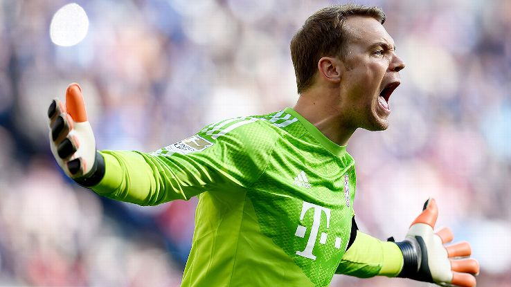
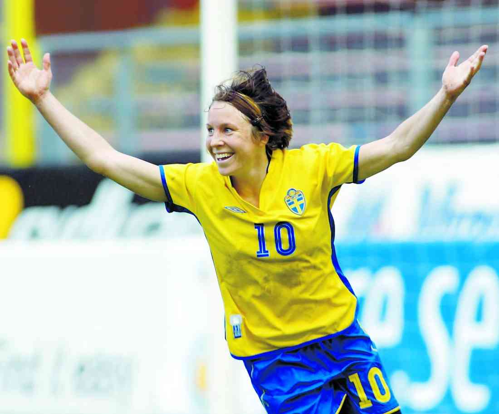
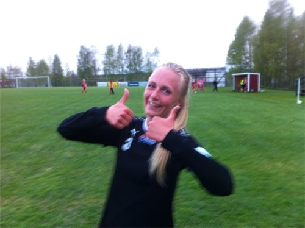

Fotbollsspelare genom tiderna
Här är en lista på de bästa fotbollsspelarna enligt mig:
- 1. Manuel Neuer, målvakt i Bayern München
 - 2. Hanna Ljungberg, legendar i Umeå IK
 - 3. Sofie Borck Janeheim, fotbollsspelare i KTH FC

Om du vill bli lika bra som dessa, kan det vara bra att först kunna spelreglerna.
Klicka på knappen om du vill prova!